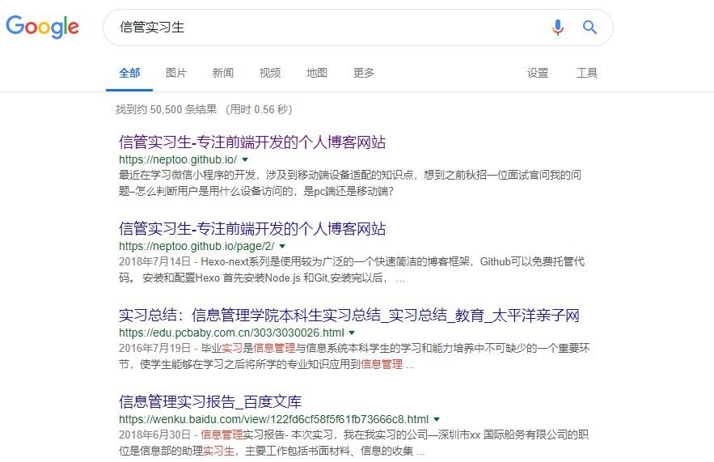
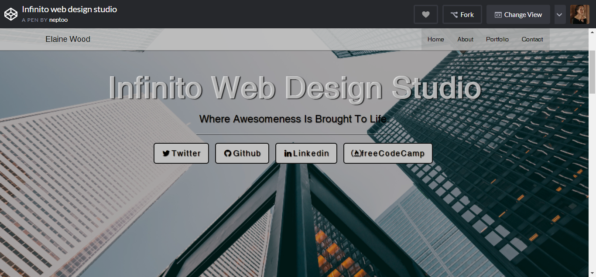

五七
求职意向: web前端开发
- 项目经验
-
NoseDive--电影微信小程序 在线预览
T: 参照微信小程序官方文档，仿豆瓣电影的UI设计，编写代码。
P: 首先，编写需求文档，并在Mockplus上画出设计图，确定实现的主要功能模块。然后参照小程序文档，分解每个功能模块，对照API实现各个组件。
R: 实现文章阅读、电影搜索和电影详情页展示，第一次通过在线API引入真实数据，熟悉了微信小程序开发的基本流程。
-
Vue电子书阅读器 在线预览
技术栈：Vue.js+Epub.js+Scss
实现功能：电子书的解析渲染，以及翻页、主题，阅读进度跳转
收获：了解了阅读器的工作原理和基本功能，并学会了如何将Vue-cli项目挂载gh-pages/移动端预览。
-
- 课程设计
-
1.搜索引擎优化SEO 优化步骤
针对网站标签、图片、关键字和页面索引等，将个人博客网站优化到谷歌关键词搜索首页
示例: 谷歌搜索 "信管实习生",前两条结果就是我 :P
 -
2.商务数据分析成果展示
根据队友爬取的一万条数据，负责数据可视化。
主要是利用weka进行数据分类、聚类、关联规则分析，然后对数据进行词频分析得到云标签。最后被评为优秀作业，发表在公众号“用数说”。
-
3.个人作品集在线预览
运用HTML+CSS+Bootstrap库，设计自己的作品集，实现了一个简洁风格的响应式布局的网站，适配移动端。
 -
4.电商网站设计（2017年）
采用JSP+Servlet+MySQL，建设了一个汽车销售网站。
我负责网站前端页面建设，读取并显示后台传递的数据，实现了二级菜单、轮播图和简单布局。
-
- 自我评价
-
我了解Vue.js框架的学习和基本开发使用，但我更注重原生JS的深入学习
具有扎实的英文基础，能流畅阅读英文文档，学习新技术
坚持写技术博客，记录学习成果，加深对技术的理解，可以和同行分享交流